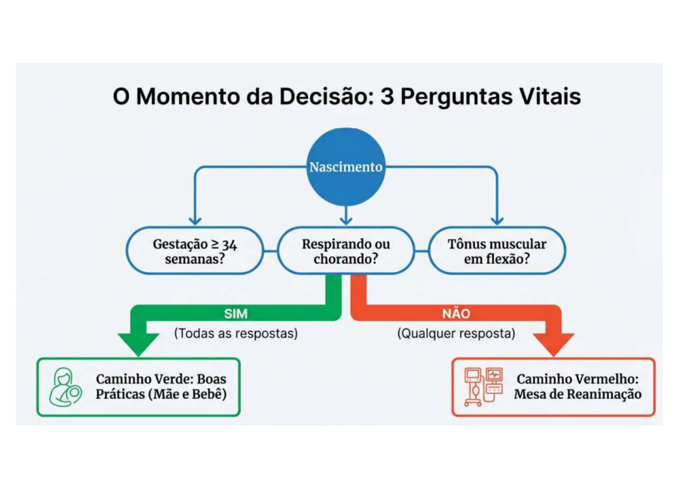
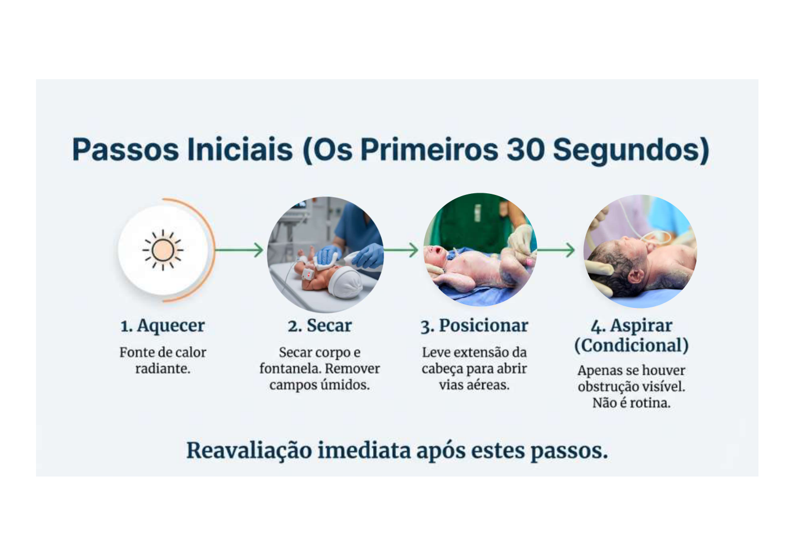

Atendimento ao Recém-Nascido Normal na Sala de Parto
Quem Deve Estar na Sala de Parto
0/3 marcados
Checklist — Recepção do RN ≥ 34 Semanas


Avaliação Imediata (antes de cortar o cordão)
0/3 marcados
✅ Se SIM às 3 perguntas → BOA VITALIDADE → manter com a mãe
RN com Boa Vitalidade — Conduta
0/9 marcados
RN sem Boa Vitalidade → Mesa de Reanimação
(ver arquivo reanimacao_neonatal.md)
Prescrição Médica Padrão do RN (Alojamento Conjunto)
0/9 marcados
Triagem Neonatal Obrigatória (Antes da Alta)
| Teste | Nome Popular | Quando | O que Detecta |
|---|---|---|---|
| Teste do Pezinho | Fenilcetonúria, hipotireoidismo, etc. | 3–5 dias de vida | 6 doenças metabólicas (PKU, hipotireoidismo, hemoglobinopatias, hiperplasia adrenal, biotinidase, fibrose cística) |
| Teste da Orelhinha | OEA (emissão otoacústica) | Antes da alta | Perda auditiva neurossensorial |
| Teste do Coraçãozinho | Oximetria de pulso | Após 24h de vida | Cardiopatia congênita crítica (SatO₂ <95% ou diferença >3% entre membro superior e inferior) |
| Teste do Olhinho | Reflexo vermelho | Antes da alta | Catarata, retinoblastoma, outros |
Parâmetros Normais do RN a Termo
| Parâmetro | Valor Normal |
|---|---|
| Temperatura corporal | 36,5 – 37,5 °C |
| FC | 120 – 160 bpm |
| FR | 40 – 60 irpm |
| SatO₂ (pré-ductal, após 10 min) | ≥ 95% |
| Peso médio | 3.000 – 3.500 g |
| Comprimento médio | 48 – 52 cm |
| PC médio | 33 – 35 cm |
Perda de Peso Fisiológica
- Normal: até 7–10% do peso de nascimento na primeira semana
- Deve recuperar o peso de nascimento até o 10º–14º dia de vida
- Perda >10% → investigar oferta de leite, avaliação de lactação
APGAR — Avaliação da Vitalidade
| Critério | 0 | 1 | 2 |
|---|---|---|---|
| FC | Ausente | <100 bpm | ≥100 bpm |
| Esforço respiratório | Ausente | Irregular, fraco | Regular, choro |
| Tônus muscular | Flácido | Semifletido | Flexão ativa |
| Irritabilidade reflexa | Sem resposta | Careta | Choro, tosse |
| Cor | Cianótico/pálido | Acrocianótico | Corado |
- 7–10: normal
- 4–6: asfixia moderada
- 0–3: asfixia grave
- Avaliar com 1 e 5 minutos; se <7, repetir a cada 5 min até 20 min
⚠️ APGAR não determina a conduta de reanimação — quem determina é a avaliação da FC e da respiração nos primeiros 30 segundos
Alertas OSCE ⚠️
- Clampeamento tardio ≥60 seg — não clampar imediatamente
- Hepatite B deve ser dada dentro das 24 horas de vida — não aguardar
- Vitamina K é IM (não VO — absorção oral inadequada no RN)
- Profilaxia ocular com PVPI 2,5% (não nitrato de prata que saiu do mercado)
- Teste do pezinho: 3–5 dias de vida (não antes — falso-negativo para PKU se coletar antes de 48h de amamentação)
- APGAR <7 com 5 min → continuar avaliação; APGAR não orienta reanimação
Fonte
- Gerado a partir de:
conteudo_cuidados_com_o_rn.md(Aulas 01 Teórica + Prática Cuidados com RN) - Seções consultadas: assistência ao RN a termo com boa vitalidade, clampeamento, prescrição médica padrão, APGAR
- Gaps identificados: Triagem neonatal (testes do pezinho, orelhinha, coraçãozinho, olhinho) complementada com conhecimento geral — não detalhada na aula